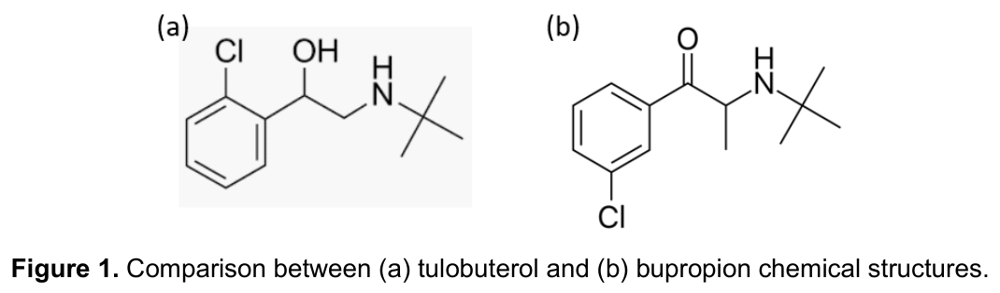
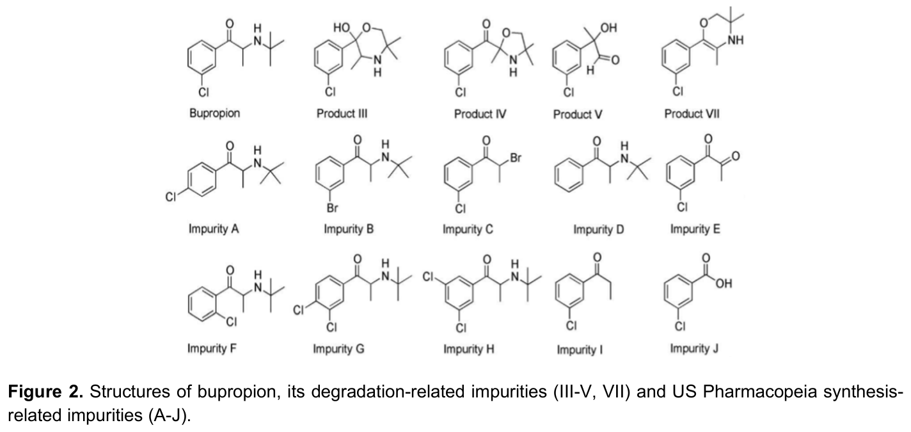
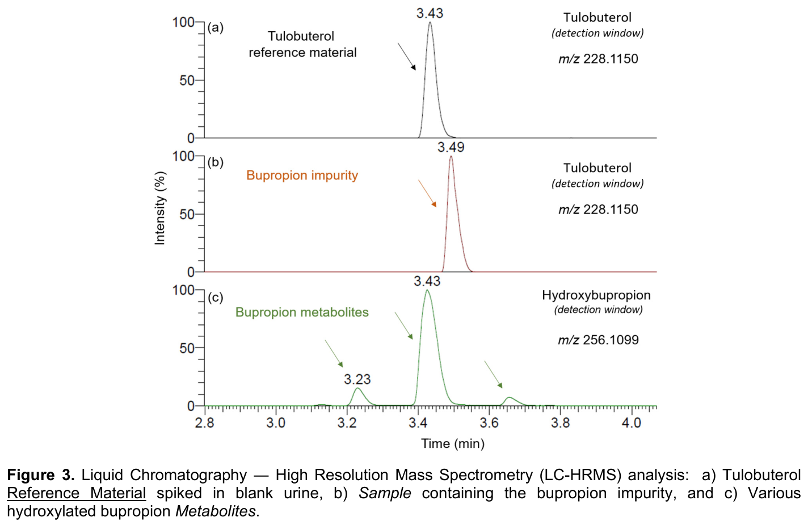
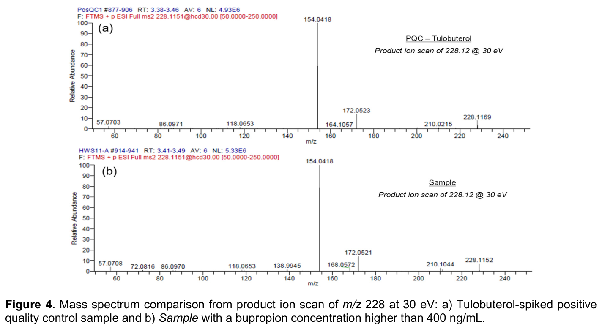
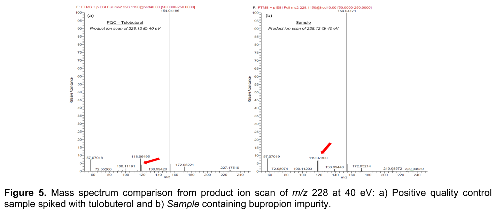
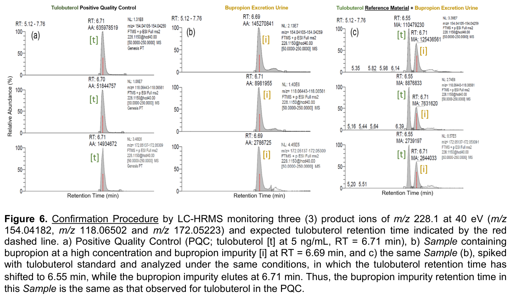
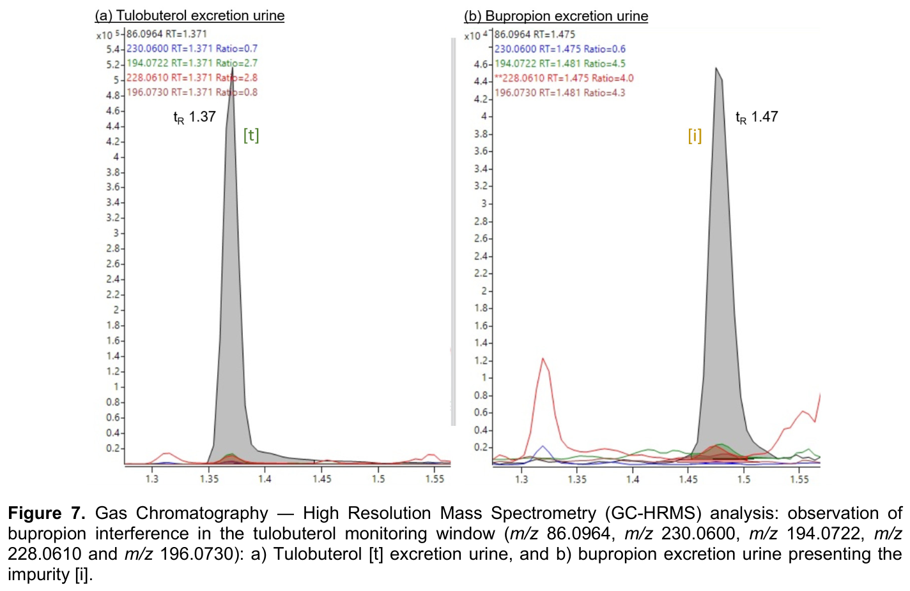

Technical Letters · TL17 (replaces TL2019/01)
Edition v2.0, 2019 (version 2.0) · effective 16 April 2019 · superseded
Retrieved on 25 November 2026 from https://www.wada-ama.org/sites/default/files/resources/files/tl17_detection_of_tulobuterol_in_the_presence_of_bupropion.pdf
Editions: v3.0, 2021 (current) · v2.0, 2019
p. 1
DETECTION OF TULOBUTEROL IN THE PRESENCE OF BUPROPION
*The approval by the WADA Executive Committee is applicable only to Technical Letters issued after November 2019.
The World Anti-Doping Agency wishes to draw the attention of the Laboratories to the following remarks and instructions on the analysis and reporting of tulobuterol (1-(2-Chlorophenyl)-2-[(2-methyl2-propanyl)amino]ethanol) (Figure 1a). Tulobuterol is listed by name under section S3. beta-2 agonists of the Prohibited List since 2018 and available as an active ingredient of asthma medications in several countries.

Figure 1. Comparison between (a) tulobuterol and (b) bupropion chemical structures.
Tulobuterol shares structural similarity with bupropion (Figure 1b), which is not a Prohibited Substance, but is included in the WADA Monitoring Program.
Depending on the chemical environment, the bupropion structure may undergo various chemical modifications, which can lead to the formation of several degradation products (Figure 2).

Figure 2. Structures of bupropion, its degradation-related impurities (III-V, VII) and US Pharmacopeia synthesis-related impurities (A-J).
p. 2
*The approval by the WADA Executive Committee is applicable only to Technical Letters issued after November 2019.
It has been determined that a signal derived from a bupropion derivative (either a degradation- or synthesis-related impurity, or its Metabolite) may interfere with the detection of tulobuterol (Figure 3).

Figure 3. Liquid Chromatography - High Resolution Mass Spectrometry (LC-HRMS) analysis: a) Tulobuterol Reference Material spiked in blank urine, b) Sample containing the bupropion impurity, and c) Various hydroxylated bupropion Metabolites.
In the example above, the chromatographic condition allows the tulobuterol peak (3.43 min) to be resolved from the putative bupropion impurity (3.49 min). However, depending on the chromatographic setup, the bupropion impurity may coelute with tulobuterol. The structure of the bupropion impurity is currently unknown, but it has been suggested as a chloro-isomer of tulobuterol, although the fate of the α-methyl group from bupropion is currently unclear.
On LC-ESI-MS/HRMS, applying low collision energy (CE) (< 40 eV), the ion abundance ratios for tulobuterol vs. the coeluting bupropion impurity are nearly identical (Figure 4). Even a Confirmation Procedure including three (3) ion transitions may lead to comparable signal ratios.
p. 3

Figure 4. Mass spectrum comparison from product ion scan of m/z 228 at 30 eV: a) Tulobuterol-spiked positive quality control sample and b) Sample with a bupropion concentration higher than 400 ng/mL.
Nevertheless, the differentiation between these two substances may be possible if a higher CE is applied during LC-ESI-MS/HRMS analysis (Figure 5). On the other hand, depending on the instrument setups, the product ion scan of m/z 228 at ≥ 40 eV may not result in differences in the ion intensities of m/z 118 and m/z 119.

Figure 5. Mass spectrum comparison from product ion scan of m/z 228 at 40 eV: a) Positive quality control sample spiked with tulobuterol and b) Sample containing bupropion impurity.
p. 4
*The approval by the WADA Executive Committee is applicable only to Technical Letters issued after November 2019.
In addition, the presence of bupropion and/or its Metabolites at a very high concentration in the Sample may saturate the stationary phase and cause a shift of the expected retention times of tulobuterol and the interfering bupropion impurity. This phenomenon would not be observed in the tulobuterol positive quality control sample.
Thus, even if the Analytical Testing Procedure provides the necessary chromatographic resolution required for identification of tulobuterol in the presence of the bupropion impurity (e.g., Figure 6c), the TD IDCR retention time criterion for tulobuterol, as defined in the positive quality control sample (Figure 6a), may be putatively met by the bupropion impurity present in the Sample, which elutes at the expected retention time for tulobuterol (e.g., Figure 6b).

Figure 6. Confirmation Procedure by LC-HRMS monitoring three (3) product ions of m/z 228.1 at 40 eV (m/z 154.04182, m/z 118.06502 and m/z 172.05223) and expected tulobuterol retention time indicated by the red dashed line. a) Positive Quality Control (PQC; tulobuterol [t] at 5 ng/mL, RT = 6.71 min), b) Sample containing bupropion at a high concentration and bupropion impurity [i] at RT = 6.69 min, and c) the same Sample (b), spiked with tulobuterol standard and analyzed under the same conditions, in which the tulobuterol retention time has shifted to 6.55 min, while the bupropion impurity elutes at 6.71 min. Thus, the bupropion impurity retention time in this Sample is the same as that observed for tulobuterol in the PQC.
The chromatographic evaluation of the Sample after spiking it with the tulobuterol Reference Material may assist in determining the "correct" retention time of tulobuterol in the Sample (Figure 6c). Since the retention time is dependent on the matrix, a comparison between a Sample Aliquot which has been spiked with the tulobuterol Reference Material and a non-spiked Sample Aliquot would allow the Laboratory to detect either an emerging new peak for tulobuterol or an increase in the relevant tulobuterol peak area of the spiked Aliquot. This would indicate either the presence of the bupropion impurity or the "correct" retention time of tulobuterol in the Sample, respectively.
p. 5
*The approval by the WADA Executive Committee is applicable only to Technical Letters issued after November 2019.
As for LC analysis, depending on the chromatographic setup, the analysis of tulobuterol by Gas Chromatography may risk a false Adverse Analytical Finding if a bupropion interference is present at the expected tulobuterol retention time (Figure 7).

Figure 7. Gas Chromatography - High Resolution Mass Spectrometry (GC-HRMS) analysis: observation of bupropion interference in the tulobuterol monitoring window (m/z 86.0964, m/z 230.0600, m/z 194.0722, m/z 228.0610 and m/z 196.0730): a) Tulobuterol [t] excretion urine, and b) bupropion excretion urine presenting the impurity [i].
By GC-MS, the major tulobuterol ion is m/z 86.0964, followed by the m/z 230.0600, 194.0722, 228.0610 and 196.0730, all at less than 5% of the intensity of the major ion. In the present chromatographic conditions, tulobuterol elutes at a retention time of 1.37 min (Figure 7a), while an excretion urine from a bupropion administration shows a peak eluting at 1.47 min, which has the same major ion transition of tulobuterol - identified as the bupropion impurity (Figure 7b). Because of the similarities in mass spectra and the small difference in retention time between tulobuterol and the bupropion impurity, this suggests that there might be a risk of misidentification when analyzing tulobuterol by GC-MS if the chromatographic conditions do not enable a differentiation (peak resolution) by more than 0.1 min.
p. 6
*The approval by the WADA Executive Committee is applicable only to Technical Letters issued after November 2019.
In conclusion, if bupropion or its Metabolite(s) are detected in the Sample, it is recommended that prior to reporting a result for tulobuterol as an Adverse Analytical Finding, Laboratories take the following steps to evaluate whether the finding could be the result of a bupropion impurity interference:
- The chromatographic and mass spectrometric setup shall consider the potential bupropion impurity interference. An excretion urine from a bupropion administration study should have been investigated by the Laboratory during the method validation of the tulobuterol Confirmation Procedure. The analysis of a bupropion product or Reference Material may not be sufficient for the detection of the interfering bupropion derivative¹ . If mass spectral differentiation is not possible or ambiguous, the difference in retention time between tulobuterol and any bupropion-derived interfering peaks should be greater than 0.1 min;
- The correct retention time of tulobuterol in the Sample shall be confirmed by the analysis of an additional Sample Aliquot which has been spiked with tulobuterol Reference Material. If an emergent new peak is observed in the tulobuterol-spiked Aliquot, the Sample shall be reported as a Negative Finding.
Should you have any further questions, please do not hesitate to contact the WADA Science Department.
¹Preliminary studies have shown that the interfering bupropion derivative is only detected following an in vivo administration of bupropion, and not through the direct analysis of a bupropion-containing pill or Reference Material.
Retrieved on 25 November 2026 from https://www.wada-ama.org/sites/default/files/resources/files/tl17_detection_of_tulobuterol_in_the_presence_of_bupropion.pdf